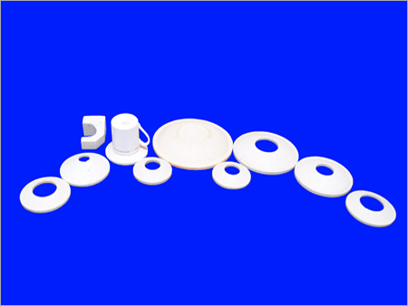

Mullite Cordierite Kiln Furniture
Amerys Special Refractory offers a wide range of Cordierite kiln furniture for use in various applications including technical ceramics, tableware, sanitaryware, powder metals, medical, heavy clay, grinding media, catalysts etc.
Amerys Special Refractory Cordierite Kiln Furniture and kiln plates can be used for firing of products across a wide range of applications and industries.
Cordierite Kiln Furniture
Amerys Special Refractory offers a wide range of Cordierite kiln furniture for use in various applications including technical ceramics, tableware, sanitaryware, powder metals, medical, heavy clay, grinding media, catalysts etc.
Amerys Special Refractory Cordierite Kiln Furniture and kiln plates can be used for firing of products across a wide range of applications and industries.

Cordierite Kiln Furniture Products
Amerys Special Refractory offers a wide range of Cordierite kiln furniture for use in various applications including technical ceramics, tableware, sanitaryware, powder metals, medical, heavy clay, grinding media, catalysts etc.
Amerys Special Refractory Cordierite Kiln Furniture and kiln plates can be used for firing of products across a wide range of applications and industries.